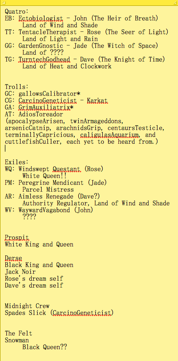
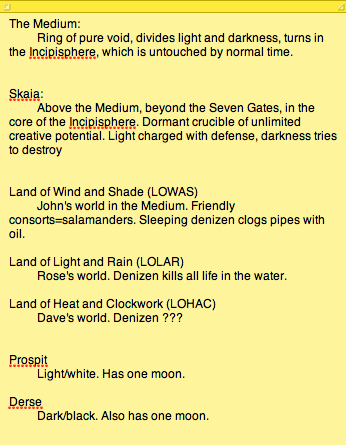

Those are my notes so far, thanks to the recap. I started them to keep track of screen names but hey, why not keep track of everything, since this story is so ridiculously complex so far?
So, since it’s the one year mark and I’ve got a handle on things, a leetle bit of thoughts:
Questions and theories/predictions/wild guesses so far:
- Who was the Wayward Vagabond before he was exiled? I’m guessing not a king since that would be way to obvious with Windswept Questant being the white queen. I want to guess he’s either an artist or some kind of Medium cosmologist, since the chalk drawings seem important, but really, I’ve got no clue.
- Other than being assholes, what is the trolls’ motivation? Probably not to get the four killed, since GC seemed to be upset by the idea that she got John killed in the alternate timeline and she did guide him to the second gate afterward. Do they want to undermine the game as well, to stop the world ending from taking place on other planets?
- Did the trolls’ families also get into the Medium, like John’s dad, Rose’s mom, Dave’s brother, and Jade’s dogthing? Since John and Rose both wrote the equivalent of genetic codes on their walls, and their parents seem to have some idea of the game and what to do in it, they must be important.
- Why were the exiles exiled? Now that I know the trolls also had 12 corresponding exiles, it must be the nature of the game.
- Prediction: Jade being able to see the future via her dream self is unique, and there’s not a troll who could do that, which is what makes our heroes special among game-players. She enables them to undo the system, or at least attempt to.
- Prediction: It’s also unusual to have one of the kings or queens as an exile, but it’s happened this time due to Jade’s machinations with the package that lead to PM getting the ring from WQ. The fact that WQ is on fucked up Earth and not Prospit is going to end up protecting her.
- The White King will also give up his crown, without dying, so PM can try to get the package back, but Jack won’t give it up, especially not after it enabled him to get the ring from the Black Queen.
So the overriding question I have right now is just how does the trolls’ game differ from the humans’ game? That way I can figure out what’s a normal part of the game (like the exiles and the kernelsprites) and what’s not (like Dave time travelling and having aliens interact with their game).